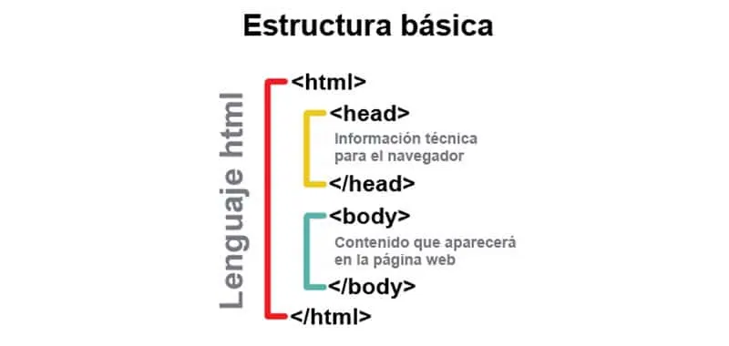

Unidad III - Introducción al HTML, primeros pasos -- Formateo de textos
Inicio Clase 1 Clase 3 Clase 4 Clase 5 Clase 6 Programa
Para que dos personas se comuniquen es necesario que hablen el mismo idioma, esta nota es comprensible para los que compartimos el idioma español. Lo mismo se puede decir sobre las computadoras e Internet, debido a que, la Web no es más que la suma de computadoras que hablan el mismo idioma. Por tanto, para que dos o más PCs se comuniquen es requisito indispensable que manejen el mismo lenguaje.
El lenguaje que "hablan" las páginas web se llama HTML (HyperText Markup Language) y fue creado en 1992 por un físico nuclear llamado Tim Berners-Lee. Berners-Lee tomó dos herramientas preexistentes: el concepto de hipertexto (que permite conectar documentos entre sí a través de palabras que obran como puentes) y el SGML (siglas en inglés de lenguaje estándar de marcación general), que sirve para poner etiquetas o marcas en un texto que indiquen qué es cada parte y cómo debe verse.
El HTML (siglas en inglés de Lenguaje de Marcado de Hipertexto) no es exactamente un lenguaje, sino más bien es un sistema muy simple de etiquetas (algo así como palabras claves) que contienen órdenes y se insertan en el texto que uno quiere publicar. HTML tiene una serie de estilos comunes: encabezados, párrafos, listas y tablas, así como también formatos de caracteres como negritas y ejemplos de código. Un documento HTML es un archivo de texto: Parte de ese texto es lo que uno quiere comunicar; y el resto son las etiquetas HTML. Algunas etiquetas sirven para decir "esto es un encabezado" o "esto es una lista", describen la estructura de la página y no dicen nada sobre el aspecto (su apariencia) que tendrá la página cuando se visualice en el navegador. El trabajo del diseñador es decidir el tamaño del encabezado y el tipo de letra.
El aspecto de las páginas escritas en HTML, varían según los sistemas y navegadores con los que se visualizan, sin embargo, lo que sí seguirán estando allí dentro es la información real y los vínculos.
Por tanto, la recomendación para el diseñador es que cuando desarrolle su página, lo haga para que funcione en la mayoría de los navegadores, y se concentre en un contenido claro y bien estructurado, que sea fácil de leer y entender.
Escribir en un lenguaje de marcado significa que empieza con el texto de su página y que luego coloca "etiquetas" en ciertas palabras y párrafos. Los archivos HTML contienen lo siguiente:
HTML tiene un conjunto definido de etiquetas que se pueden usar. Para empezar a escribir HTML, lo único que realmente necesita es algo para crear sus archivos HTML (un editor de textos) y un navegador para verlos. Cuando va guardar sus archivos deberán tener la extensión .html; por ejemplo: miarchivo.html.
Para crear una buena página se tiene en cuenta dos aspectos:
Tipos de etiquetas o comandos:
Estilos de etiquetas o comandos:
La estructura de una etiqueta HTML es simple. La orden siempre va encerrada entre los signos mayor que (<) y menor que (>). Por ejemplo: "Acá empieza el título del documento" se escribe: <TITLE>...... (título del documento), y luego para indicar el fin del título utilizamos la barra "/" en la etiqueta: </TITLE>.
Todas las páginas web tienen la siguiente estructura:

Un documento HTML bien redactado tiene ocho etiquetas básicas que marcan las secciones principales del archivo:
Obs: un documento HTML consta de dos partes: HEAD y BODY. Siempre deben estar presentes.
Requisitos para escribir una página web:
villoan73@gmail.com CT y CEV "Pdte Carlos A. López"
Webmaster: Jhoan Ramirez & Matias Ruiz Diaz © 2026